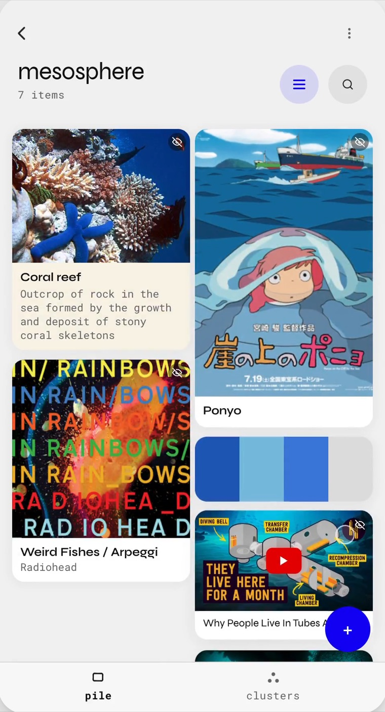
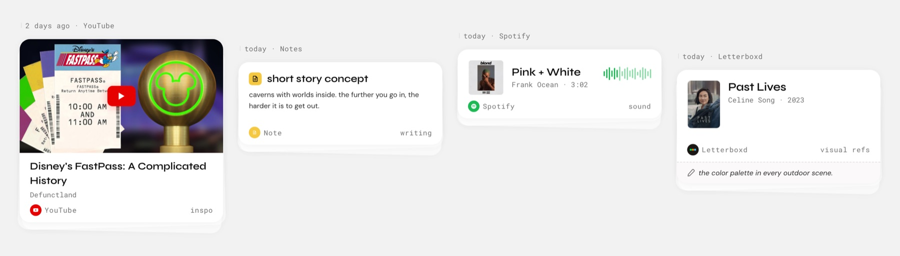

01 Problem and context
There’s a step in creative work with no tool for it.
Before a script, album, or film has a form, its maker is already gathering a song, a poster, a color, a Wikipedia rabbit hole. That material ends up in screenshots, notes apps, and group chats. When the person sits down to work, the project’s world is scattered across all of them.
Students developing creative projects struggle to keep ideas and references from different sources together with the project they support, and to find and use them again when they return to work.
- Who it’s for
- U-M students actively making creative work, such as film, writing, music, or design, who save material from more than one app.
- Why now
- Inspiration arrives on the phone, inside other apps, and fades in seconds. Existing tools either save with no destination or assume the work already exists.
Students return to useful inspiration for an active project without searching across apps.
Repeat use: the share of target users who create a pile, add to it, and return within a week.
02 Research and synthesis
The friction was real for some people, and absent for others.
We ran three semi-structured interviews about real, recent projects. We kept what people did separate from what they said about our idea, then compared patterns on a shared FigJam board. Alongside that, I mapped the competitive landscape and sized the market.
-
P1High friction
Designing a game that helps autistic children practice everyday communication.
“I need to go back and forth a lot of times.”
Replayed interview recordings again and again to find one statement.
-
P2High friction
Making a physical and digital poetry zine for a capstone.
“Literally a place to dump everything.”
Kept links in a Google Doc, gave up on Canva, and struggled to decide what belonged.
-
P3Low friction
Building an AI study assistant as a side project.
“I don’t want the organization problem to become the entire project.”
Search and a README were enough. Wouldn’t install a new tool to try it.
Save, with no destination
Pinterest · Are.na · Notion · NotesThe step before the work has a form
PiletAssume the destination exists
Final Draft · Logic · Premiere · FigmaThe pain isn’t scattered references. That’s the symptom. The pain is losing the feeling of a project before you sit down to make it.
03 Key decisions
Four calls I made, and the evidence behind each one.
Small samples make it easy to over-read results. My rule for the team was to let evidence narrow the scope, and to keep opinions about the product from posing as evidence that the problem exists.
-
Narrow the user
From “U-M students” to mixed-media creatives with an active project.
- Evidence
- P3 felt little friction and sat outside our segment. People who only collect images are already well served by Pinterest.
- Trade-off
- A smaller market, estimated at 3.5–6M US iPhone users. Big enough to matter, focused enough to win.
-
Separate behavior from opinion
Concept reactions were logged apart from workflow evidence.
- Evidence
- P2 asked for unlimited colored tags, but nothing in their actual workflow needed them.
- Trade-off
- Custom tags stayed an idea rather than a priority. Tags also pull the product toward an archive, the opposite of what Pilet is for.
-
Put sharing on hold Pivot
Private Pile Sharing moved from feature idea to lower-confidence bet.
- Evidence
- P1 worked alone. P3 shared links on Discord without needing a dedicated tool.
- Trade-off
- We kept privacy itself as a requirement, since people save honestly only when no one is watching. That became Test 3.
-
Test the riskiest, not the easiest
I consolidated 26 assumptions and picked three, with pass thresholds set before testing.
- Evidence
- One assumption each for desirability, feasibility, and ethics: whether people would adopt it, whether it would work, and whether it would be safe.
- Trade-off
- Usability and pricing went untested this round. They come after we know people want it.
04 The solution
One pile per project. Saving costs almost nothing.
Pilet is a private, phone-first space for each thing you’re making. You add references from any app through the iOS share sheet, and they appear as rich cards you recognize at a glance. You browse the pile like a studio wall instead of searching a list of links.

Share-sheet capture
Save from TikTok, Instagram, Spotify, Letterboxd, the web, and 10 other sources without leaving the app you’re in.
Rich cards
Posters, album art, palettes, and lead images. Seeing a card beats trying to remember a URL.
Pile and clusters
Browse the whole pile like a studio wall, or group items into clusters. No setup needed.
Hide the image
A song can belong to a project while its cover art clashes with the mood. You can hide the image and keep the reference.
Private by default
…but nothing on screen said so. Test 3 caught this.

Anything saved in a hurry lands here. Send it to a pile now, or shuffle it for later. The empty state is the win, not a badge count to clear.
05 Testing and outcomes
One clear pass, one clear miss, and one honest “not yet.”
We set each threshold before running the test, and reported against it even when the result was uncomfortable.
-
Feasibility · CaptureSupported
Shared items keep their source and preview.
42 / 42 saves intact: 3 testers × 14 item types. The bar was 9 in 10.
-
Ethical · OrganizeNot supported
People can tell whether a pile is private.
0 / 3 testers could tell the pile was private.
The build had no visibility indicator and no sharing control. Being private by default doesn’t reassure anyone if the screen never says so. With 3 testers instead of the planned 5, this result is directional.
-
Desirability · AdoptInconclusive
Students will choose Pilet over Pinterest or Notes.
15 waitlist sign-ups · 3 positive demo reactions
That shows interest, not a switch. We didn’t run the planned interviews, so I didn’t count interest as adoption.
- Product outcome
- Partly met Fast capture is proven. Whether people come back to their piles is not, because we didn’t measure it.
- Business outcome
- Not yet measurable The waitlist is the top of the funnel. Weekly return can be tracked once those 15 people get access.
The call: continue with Pilet and make targeted changes. Don’t rethink the problem.
06 Reflection
What I owned, and what I’d do differently.
- Framed the problem space, target user, and desired product and business outcomes.
- Set the interview approach and kept behavior separate from opinion in our synthesis.
- Wrote the opportunity report: competitors, market sizing, and three solution ideas.
- Consolidated 26 assumptions, chose what to test, and wrote the plans and thresholds.
- Turned the results into the continue-and-change decision and the next steps.
- Test the core insight first. “Losing the feeling” is the bet everything rests on, and we never tested it directly.
- Recruit inside the segment. P3 was a useful contrast, but one of three interviews spent outside the target is expensive.
- Protect the sample size. Two tests ran with 3 people instead of 5. I’d lock in recruiting before the test week.
- Add a visible privacy indicator and a share-with-one-person control, then rerun Test 3 with 5 students.
- Give the 15 waitlist sign-ups access and track who creates a pile, adds to it, and returns within a week.
- Run the five adoption interviews we planned, against current tools.
This was a team project, presented individually. Thanks to Orion, who ran project management, conducted an interview, and helped with product testing, and to Saran Ramesh, who interviewed participants and recruited testers.
We used ChatGPT to help organize findings and draft documents. All interviews, tests, and results were the team’s own.